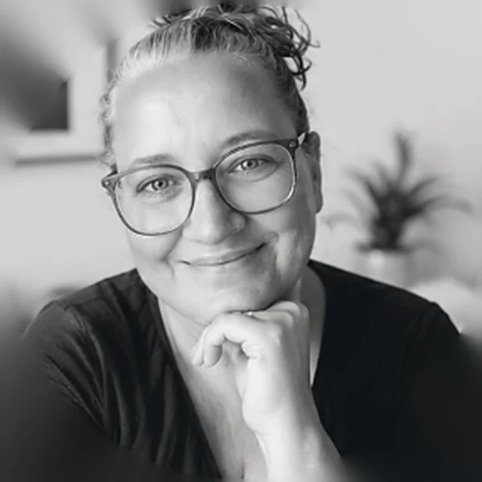

Lotte Nielsen · multimediedesigner
Om mig
Fra kursussystemer og koordinering i Danmarks Lærerforening og på Syddansk Universitet til UX og frontend. Den røde tråd er den samme: at bygge bro mellem mennesker og systemer.
Kontakt mig
Mennesket bag skærmen
Jeg kan godt lide problemer, der skal løses. Sudoku, kodning og escape rooms har én ting til fælles: Jeg bliver irriteret, når jeg ikke kan finde løsningen, og urimeligt tilfreds, når det hele pludselig går op.
- Jeg stiller spørgsmål, andre ikke har tænkt på endnu. Og gerne et par stykker mere.
- Jeg kan ikke lade et system være i fred, hvis det kan gøres smartere.
- Min hjerne har 37 faner åbne. Mindst tre af dem undersøger, hvorfor noget ikke fungerer.
- Frivillig i Coding Pirates i Odense, hvor jeg hjælper børn i gang med teknologi.
- Fotograferer og rejser, når fanerne skal lukkes for en stund.